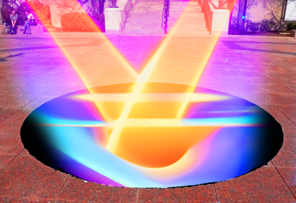

The seal located at Marsh Plaza on Boston University campus is an ostensible memorial to the school's values and history. However,
a darker, more sinister secret might be "sealed" away by this inconspicious monument that thousands of students pass by everyday. Recent
findings point towards something greater being at play here, which you can read below.
Who's to tell you where you CAN and CANNOT stand and or walk??? Start asking questions, we'll start finding answers.
SEISMOGRAPH READING! THE SEAL IS VIBRATING!?
Students at the BU College of Engineering accidentally recorded this strange reading of abnormal seal activity. Readings show the seal
was vibrating at a frequency that would be "impossible" without influence from unnatural forces. HARD EVIDENCE DOESN'T LIE!!!!!

ARTIST'S RENDITION OF THEIR SEAL-RELATED VISION!!!
Talented CFA students helped render this vision corroborated by reports from dozens of random students and self-proclaimed "psychonauts". Visions of beams of colorful light
emerging from the seal have been reported over the years, with some believing them to be cosmic rays of energy. Could the seal be harboring some untapped energy source capapble of producing such a large quantity of energy???

TESTIMONIAL FROM SOMEONE WHO CLAIMS THE SEAL HAUNTED THEM
In an interview with a recent BU dropout who wished ot reamin anonymous, the bleak consequences of anyone who dares to make contact with the seal were revealed. This student accidentally made contact with the seal while evading a tour group on her way to class. Her dreams were soon haunted by "seal-like" entities and visions she was visibly distressed to be discussing.